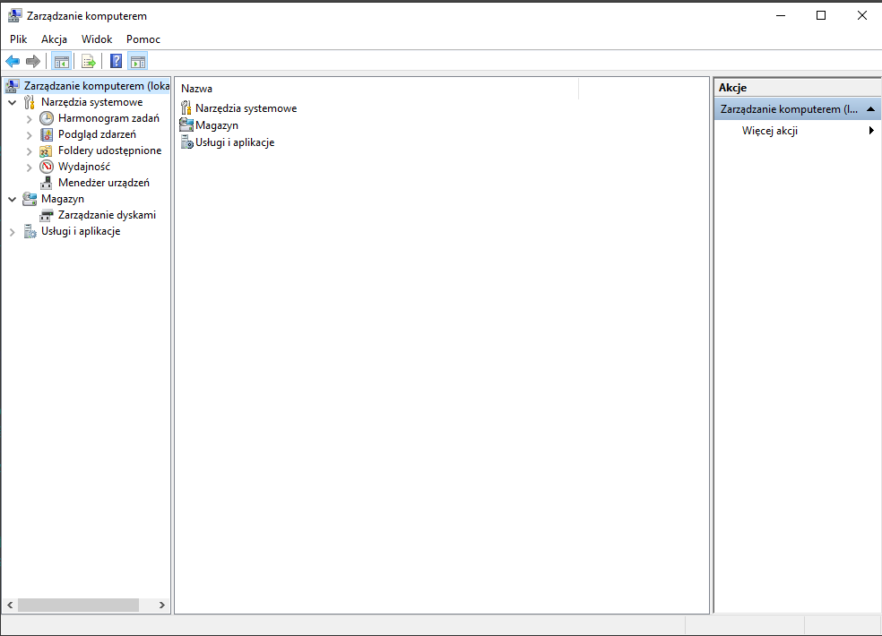

Aplet zarządzanie komputerem pozwala bardzo wygodnie zarządzać ustawieniami systemu.
Z ważniejszych opcji jakie kryje to dzienniki zdarzeń systemowych, zarządzanie użytkownikami i grupami, menedżer urządzeń, zarządzanie dyskami, usługi.
Do każdego z tych elementów można dostać się wywołując odpowiednią aplikację z wiersza polecenia uruchom.
Aplet zarządzanie komputerem jest znacznie wygodniejszy mamy wszystko pod ręką.
Główne okno jest proste i przejrzyste.
Po lewej drzewko opcji po prawej widok zawartości danego składnika.

Podgląd zdarzeń
Przez wielu niedoceniane narzędzie diagnostyki. Każdy błąd spowodowany przez jakikolwiek program lub składnik systemu jest odnotowany ze szczegółami w dziennikach zdarzeń systemu.
Program nie działa z niewiadomej przyczyny to pierwsze miejsce gdzie powinieneś szukać rozwiązania to właśnie dziennik zdarzeń.
Sekcja Aplikacja
Łatwo się domyśleć, że tu znajdziesz błędy zgłaszane przez uruchamiane na komputerze aplikacje. Pod pojęciem aplikacja znajdziesz wszystko - programy, gry itp.
W oknie widać datę i czas wystąpienia błędu, źródło oraz użytkownika jaki był zalogowany w chwili wystąpienia błędu.
Klikając dwa razy na danym błędzie możesz podejrzeć jego szczegóły.
Zarządzanie komputerem - omówienie najważniejszych zagadnień
Bardzo często informacje znalezione w dzienniku zdarzeń wystarczają do rozwiązania problemu z instalacją bądź uruchomieniem jakiejś aplikacji. Najczęściej znajdziesz tu szczegóły od czego dana aplikacja jest zależna, jakiego pliku brak lub jaki składnik wymagany przez aplikację spowodował błąd.
Sekcja system.
Dziennik zdarzeń systemowych. Zawiera nie tylko błędy działania systemu ale również bardzo przydatne informacje na temat pracy Windows
Odnotowywanych jest wiele informacji np. z żółtym wykrzyknikiem widać ostrzeżenia o przekroczeniu limitu połączeń TCP.
Tak samo jak w sekcji aplikacja tak i tu klikając dwa razy dany błąd możesz podejrzeć szczegóły wystąpienia błędu:
Zarządzanie komputerem - omówienie najważniejszych zagadnień
Foldery udostępnione
Informacje na temat zasobów aktywnych w sieci. Możesz tu podejrzeć co dzieje się w Twojej sieci lokalnej - kto i z jakich zasobów sieciowych aktualnie korzysta. Przydatne dla osób korzystających z udostępniania plików w lokalnych sieciach LAN.
Użytkownicy i grupy lokalne
Możesz dodawać, usuwać użytkowników, edytować ich uprawnienia oraz przypisywać do istniejących grup. W sekcji grupy możesz stworzyć kolejne grupy użytkowników o określonych uprawnieniach i dopisać do niej wybranych przez siebie użytkowników.
Narzędzie niezmiernie przydatne przy zarządzaniu serwerami pod kontrolą Windows.
Bardzo przydatna rzecz jaka się tu kryje to możliwość podłączania obcych profili do konta użytkownika. Często zdarza się, że z jakiejś przyczyny nie ma możliwości zalogować się do profilu. Można wtedy stworzyć nowego użytkownika, klikając prawym wybrać jego właściwości i podłączyć go do istniejącego już profilu. Istnieje szansa, że po takim zabiegu uda się pomyślnie zalogować do nowego konta zachowując wszystko co mieliśmy na starym koncie, które podłączyliśmy do nowego użytkownika.
Zarządzanie dyskami
Przystawka diskmgmt.msc (zarządzanie dyskami) to narzędzie, które umożliwia czynności związane z konfiguracją dysków komputera, m.in. – partycjonowanie, formatowanie, sprawdzanie błędów, defragmentację oraz tworzenie kopii zapasowej danych.
Główne Okno Przystawki. W głównym oknie Zarządzania dyskami mamy widok na wszystkie utworzone woluminy na komputerze, ich rozmiar, rodzaj systemu plików oraz ilość zajętego miejsca na każdym z nich.
Menu Akcja. W zakładce Akcja znajdującej się w lewym górnym rogu okna Zarządzania dyskami mamy możliwość odświeżenia listy dysków na komputerze oraz utworzenie nowego dysku wirtualnego (format VHD) lub dodanie już istniejącego. Poniżej została opisana procedura tworzenia i dołączania dysków wirtualnych.
W oknie tworzenia nowego dysku wirtualnego musimy ustalić jego:
– lokalizację na dysku
– rozmiar (wybierając również odpowiednią jednostkę z rozwijanego menu)
– format wirtualnego dysku – stały rozmiar lub dynamicznie rozszerzony (rosnący wraz z zapisywaniem na nim kolejnych danych aż do osiągnięcia rozmiaru ustalonego w poprzednim punkcie)
Po wykonaniu powyższych kroków plik dysku zostanie zapisany w ustalonej lokalizacji w formacie .vhd.
Gdy chcemy dołączyć wcześniej utworzony dysk wirtualny, wystarczy, że podamy jego ścieżkę na dysku. Dodatkowo możemy nadać mu atrybut Tylko od odczytu.
Opcje Zarządzania Dyskiem. Po kliknięciu prawym przyciskiem myszki na dysk, ukazuje się menu dające dostęp do następujących opcji:
– otwórz/eksploruj (ukazuje dany dysk twardy w oknie Eksploratora Windows)
– oznacz partycję jako aktywną (partycję, z której standardowy program rozruchowy powinien załadować system operacyjny)
– zmień literę dysku i ścieżki
– formatuj (usuwa wszystkie dane z partycji)
– rozszerz wolumin (daje możliwość powiększenia rozmiaru partycji o określoną przez użytkownika wartość)
– zmniejsz wolumin (pozwala na zmniejszenie rozmiaru partycji o określoną przez użytkownika wartość)
– dodaj dublowanie
– usuń wolumin
– właściwości (szerzej opisane dalej)
– pomoc (otwiera okno pomocy systemu Windows)
Właściwości Dysku Twardego. Okno Właściwości dysku daje nam szereg narzędzi pozwalających na zarządzanie i konserwację dysku. W oknie Ogólne możemy nadać dyskowi nazwę, zobaczyć status wolnego i zajętego miejsca oraz użyć narzędzia Oczyszczania dysku, aby zwolnić miejsce zajmowane przez zbędne pliki.
W zakładce Narzędzia mamy do dyspozycji:
– sprawdzanie błędów, które przeskanuje dysk w poszukiwaniu błędów i naprawi je,
– defragmentacja, która zdefragmentuje pofragmentowane pliki na dysku aby zapewnić szybszy ich odczyt,
– kopia zapasowa, która wykona pełną kopię plików na dysku twardym;
W oknie Sprzęt mamy wyświetlone dyski i stacje dysków podłączone do komputera oraz wyświetlony ich stan.
Zakładka Udostępnianie pozwala udostępnić innym osobom dysk twardy w sieci. Dysk twardy można zabezpieczyć tak, aby użytkownicy, którzy chcą uzyskać dostęp do danych musieli posiadać konto użytkownika i hasło do komputera, z którego dysk jest udostępniany.
W zakładce Zabezpieczenia możemy określić uprawnienia dla użytkowników, którzy mają dostęp do tego dysku twardego.
Zakładka Poprzednie wersje umożliwia przywrócenie partycji z wcześniej utworzonego punktu przywracania.
Za pomocą zakładki Przydziały dyskowe można ograniczyć użycie miejsca na dysku dla użytkowników komputera. Istnieje możliwość ustawienia poziomu ostrzeżeń, gdy użytkownik zbliża się do limitu i odmowy miejsca na dysku, gdy przekroczy przydzielony mu limit.
Usługi
Ten sam widok jaki uruchamiasz wpisując w uruchom services.msc.
Masz podgląd wszystkich usług systemowych, możesz usługi restartować, zatrzymywać, zmieniać sposób ich uruchamiania np. z automatycznego na ręczny.
Dla każdej usługi dostępne są właściwości gdzie możesz zmienić parametry uruchamiania danej usługi, zmienić ustawienia logowania dla danej usługi itp.